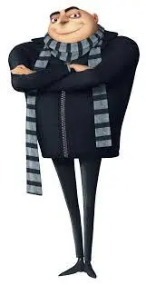
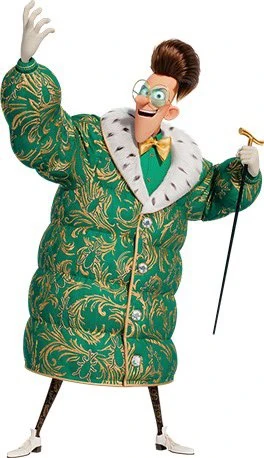
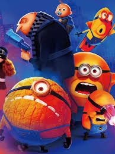

Sinopse
Em "Meu Malvado Favorito 4",Gru dá as boas-vindas a um novo membro da família, Gru Jr., que pretende atormentar seu pai. No entanto, sua existência pacífica logo desmorona quando um mentor do crime escapa da prisão e jura vingança contra Gru.
Trailer
Elenco(principais personagens)

Gru
Interpretado por Steve Carell.
Lucy Wilde
Interpretada por Kristen Wiig.
Gru Jr.
Interpretada por Tara Strong.

Maxime Le Mal
Interpretada por Will Ferrell.
Curiosidades
O filme “Meu Malvado Favorito 4″ foi o longa da Universal Pictures com melhor desempenho no Brasil. Desde a sua estreia em julho, a sequência da animação já arrecadou mais de R$ 144 milhões em bilheteria, com o público de 7,4 milhões..
Galeria de Imagens
